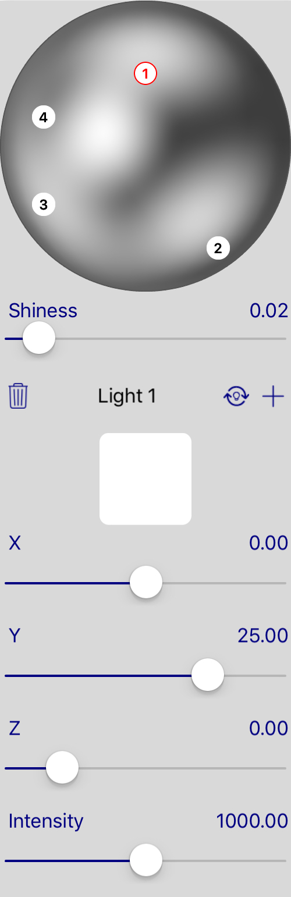

Traditional software works with color in ways that are faithful to the way machines display color, which is based on light emission. The colour of dyes and pigments is based on light absorption.
The blend of light emission is different to the one of light absorption for some colors.
For example, with light emission, Yellow blended with Blue produces Gray. But it is Green in Light absorption.
Therefore, use of light emission system for Painting not only unintuitive to users, but also gives a wrong result in gradient. More details can be found in Color Management.

There are 2 parts of light control:
It means the source of the light, by default, there are 4 lights.
For each source of light, we can also change the intensity, color and the location in three-dimensional space.
The location in x axis.
The location in y axis.
The location in z axis.
The intensity of light.
The color of the light.
The shiness of the lights.